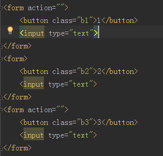
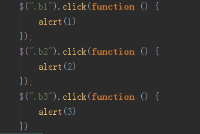
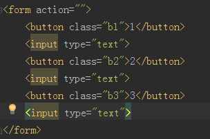

发布时间：2017-05-25编辑：EvanChuan阅读（20）
html代码如下：

script代码如下：

然后将三个按钮放入一个form中：js代码不变，html代码如下：

以上说明：
1、BS会封装form中按钮的默认回车事件就是调用按钮的点击事件；
2、同一个form中出现多个按钮会默认触发第一个按钮的点击事件；
禁止方法：
1、去掉form标签，这种做法管用但是不是根本上解决了问题；
2、在button标签中添加一个type属性，值为button；（bootstrap给的方法，推荐）